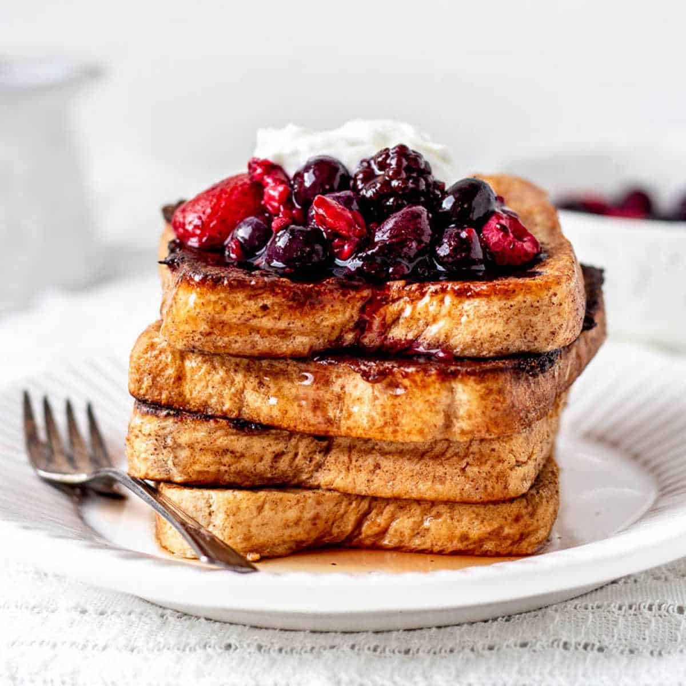
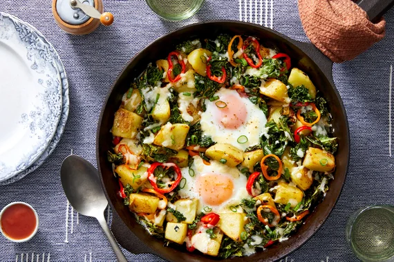
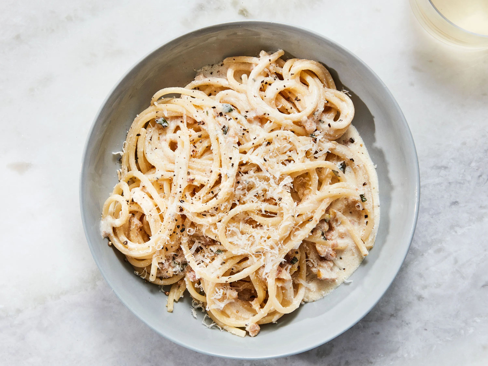
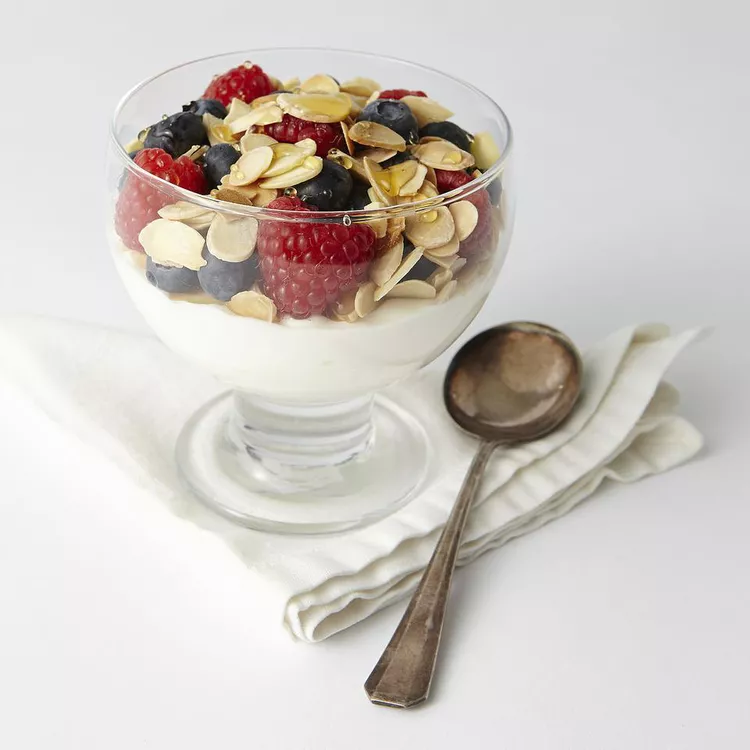
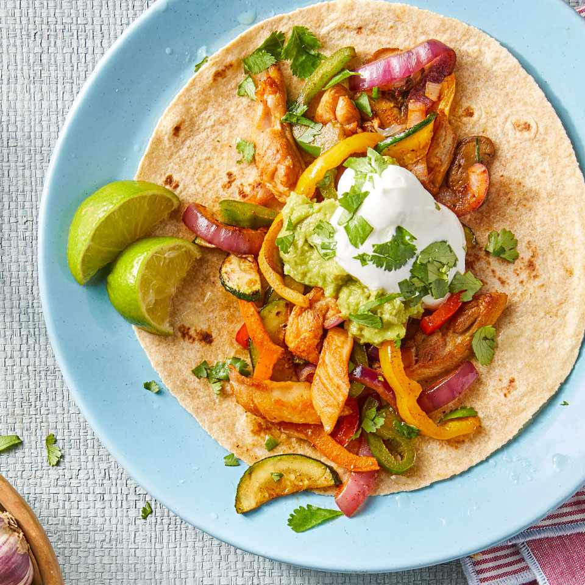

Our diet plans has two options: BULKING and CUTTING
This consists of gaining excess calories, protein, and carbohydrates to turn this into muscle. This is usually for people that are underweight or on an average weight and want to gain more fat on them. Clean bulk and Lean bulk are the two types of bulking. However, at Gold Gym, we believe that clean bulking is the best way to build mass, muscle, and to have an overall cleaner look.
BREAKFAST
Enjoy a delicious and healthy French Toast as part of your balanced diet plan. Made with whole grain bread, eggs, and a touch of cinnamon, it's a tasty treat that fits perfectly into your fitness journey.
| Calories: | 235 kcal |
| Carbohydrates: | 32g |
| Protein: | 15g |
| Fat: | 35g |
Another breakfast to enjoy is Potato Hash. This delicious breakfast is quick, convinient, and a healthy option that is high in protein!
| Calories: | 1253 kcal |
| Carbohydrates: | 27g |
| Protein: | 45g |
| Fat: | 23g |
LUNCH/DINNER
An amazingly high protein White Pasta and Pesto Sauce is a very diverse food that can be used for either lunch or dinner. It is also easily changed by switching sauces or meats.
| Calories: | 1493 kcal |
| Carbohydrates: | 42g |
| Protein: | 38g |
| Fat: | 29g |
Pizza (with beef, chicken, bacon, pepperoni) is a high protein, high calorie food that is one of the easiest ones of the two to have. It's a high-protein, high-calorie, delicious meal loved by everyone. Takeaway can be good sometimes! Usually better for after gym, dinner time meal.

| Calories: | 1538 kcal |
| Carbohydrates: | 198.2g |
| Protein: | 112g |
| Fat: | 53g |
Cutting involves a strategic approach to reduce body fat while preserving muscle mass through a controlled caloric deficit, promoting a leaner and more defined physique. At Gold Gym, we emphasize a balanced cutting strategy for achieving a sculpted and toned appearance, focusing on sustainable results and overall well-being.
BREAKFAST
A quick and easy breakfast, Nut and Berry Parfait is a healthy and tasty breakfast. It consists consists of Greek Yogurt, topped with healthy berries and almonds and lightly sweetned with honey!
| Calories: | 378 kcal |
| Carbohydrates: | 35g |
| Protein: | 30g |
| Fat: | 15g |
Another, under 5 minute made, breakfast is Avocado Toast with Burrata Burrata (cream-filled fresh mozzarella cheese) takes this avocado toast recipe to the next level for a decadent, yet weekday-friendly breakfast.
| Calories: | 439 kcal |
| Carbohydrates: | 37g |
| Protein: | 28 g |
| Fat: | 18g |
LUNCH/DINNER
Chicken & Veggie Fajitas are designed to work with whatever vegetables you happen to have on hand. The key is to slice all the veggies to approximately the same size so they cook evenly.
| Calories: | 391 kcal |
| Carbohydrates: | 35g |
| Protein: | 38g |
| Fat: | 13g |